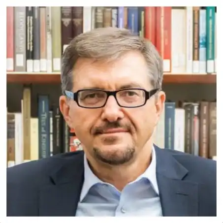

Народився 23 травня 1957 року в Горькому (нині — Нижній Новгород, Росія). Батьки — Микола і Лідія Плохії. Микола Плохій працював інженером-металургом, а мати — педіатром. Батько був випускником Запорізького машинобудівного інституту. Після закінчення вишу батька відправили за державним розподілом до Горького, де народився Сергій Плохій. Незабаром сім'я повернулася до Запоріжжя, де Сергій провів свої дитинство та юність.
1980 року Сергій Плохій закінчив Дніпровський університет, де отримав спеціальність історика. Займався історією України XVII—XVIII ст. Професійно ріс і розвивався під керівництвом професора Юрія Мицика та засновника дніпропетровської джерелознавчої школи Миколи Ковальського. Вступив до аспірантури цього ж університету. Кандидатську дисертацію захищав 1982 року на історичному факультеті Університету дружби народів в Москві, тема: "Латиномовні твори середини XVII століття як джерело з історії визвольної війни українського народу 1648—1654 рр.". Ступінь доктора історичних наук отримав у 1990 році у КНУ ім. Шевченка, захистивши 1990 року дисертацію "Політика папства на Україні у другій половині XVI — середині XVII століття".
У 1983—1992 роках викладав у Дніпровському університеті, де пройшов шлях від викладача до професора, завідувача кафедри та декана. У 1986—1987 роках стажувався у Колумбійському та Гарвардському університетах. Разом з викладачами та аспірантами кафедри загальної історії почав дослідження історії німецьких та менонітських поселень на Півдні України. На громадських засадах виконував обов'язки директора Музею університету. У серпні 1991 приїхав до Канади викладати в Університеті Альберти. Одночасно очолював відділ, а потім сектор в Інституті української археографії Національної Академії наук України, де став ініціатором видання джерел з історії українських церков. 1996 року був запрошений на наукову роботу до Канадського інституту українських студій (КІУС), де заснував Програму дослідження релігії та культури. Більше 10 років працював заступником директора (associate director) Центру українських історичних досліджень імені Петра Яцика при КІУС. Займався дослідженням спадщини Михайла Грушевського, зокрема був одним з редакторів англійського перекладу фундаментальної "Історії України-Руси". У 2007 році зайняв за конкурсом посаду професора історії України Гарвардського університету. З 2013 року Сергій Плохій — директор Українського наукового інституту, де він, зокрема, керує проєктом "МАПА. Цифровий Атлас України".